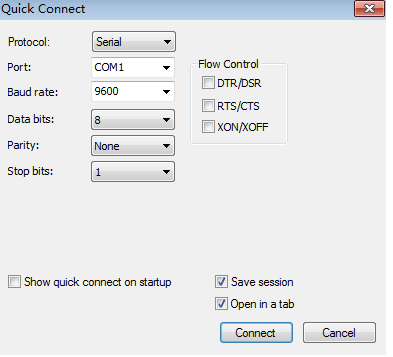

1.1. HCNA基础知识¶
1.1.1. Console口登录密码丢失后如何恢复¶
- 如果忘记了Console口登录密码，用户可以通过以下两种方式来设置新的Console口登录密码。
方式1¶
- 通过STelnet/Telnet登录交换机设置新的Console口登录密码 这种方法的前提是：用户拥有STelnet/Telnet账号并且具有管理员的权限。以下涉及的命令行及回显信息以STelnet登录设备修改Console口密码为例。用户通过STelnet账号登录交换机后，请按照如下步骤进行配置。
以登录用户界面的认证方式为密码认证，密码为Huawei@123为例，配置如下¶
<HUAWEI> system-view
[HUAWEI] user-interface console 0
[HUAWEI-ui-console0] authentication-mode password
[HUAWEI-ui-console0] set authentication password cipher Huawei@123
[HUAWEI-ui-console0] return
<HUAWEI> save
- 以登录用户界面的认证方式为AAA认证，用户名为admin123，密码为Huawei@123为例，配置如下。
<HUAWEI> system-view
[HUAWEI] user-interface console 0
[HUAWEI-ui-console0] authentication-mode aaa
[HUAWEI-ui-console0] quit
[HUAWEI] aaa
[HUAWEI-aaa] local-user admin123 password irreversible-cipher Huawei@123
[HUAWEI-aaa] local-user admin123 service-type terminal
[HUAWEI-aaa] return
<HUAWEI> save
方式2¶
通过BootROM/BootLoad清除Console口登录密码¶
交换机的BootROM/BootLoad提供了清除Console口登录密码的功能，用户可以在交换机启动后修改Console口登录密码，然后保存配置。
对于S2720EI（V200R011C10）、S5710-X-LI、S5700S-28X-LI-AC、S5700S-52X-LI-AC、S5720SI、S5730SI、S6720SI、S6720S-SI、S5720S-SI、S5720EI、S5730S-EI、S5720HI、S6720EI、S6720S-EI、S5720LI、S6720LI、S6720S-LI、S5720S-LI和SRUH/SRUK/SRUE/SRUF主控板的框式交换机，是通过BootLoad清除Console口登录密码；对于其他款型的交换机，是通过BootROM清除Console口登录密码。
- 说明：
如果交换机是双主控，则需要在执行以下操作前将备用主控板拔下，待执行完以下操作后，再插上备用主控板，执行save命令以保证主用主控板和备用主控板配置一致。
交换机的BootROM/BootLoad提供了清除Console口登录密码的功能，用户可以在交换机启动后修改Console口登录密码，然后保存配置。请按照如下步骤进行配置。
以BootROM菜单为例，请按照如下步骤进行配置。
1.通过Console口连接交换机，并重启交换机。当界面出现以下打印信息时，及时按下快捷键“Ctrl+B”并输入BootROM密码，进入BootROM主菜单。
框式交换机打印信息：
Press Ctrl+B to enter boot menu ... 1
Password: //输入BootROM密码
盒式交换机打印信息：
Press Ctrl+B or Ctrl+E to enter BootROM menu ... 2
password: //输入BootROM密码
1.1.2. BootROM密码丢失后如何恢复¶
如果忘记了BootROM密码，用户可以在登录交换机后在用户视图执行命令reset boot password重置BootROM菜单的密码为缺省值。
缺省情况下:
•盒式交换机在V100R006C03之前的版本，BootROM默认密码为huawei；在V100R006C03及之后的版本，默认密码为Admin@huawei.com。
•框式交换机在V100R006及之前的版本，BootROM默认密码为9300；在V100R006之后的版本，默认密码为Admin@huawei.com。
说明：¶
- 盒式交换机的某些款型支持使用快捷键“Ctrl+E”进入BootROM主菜单，请根据设备的界面提示操作。
- 盒式交换机在V100R006C03之前的版本，BootROM默认密码为huawei；在V100R006C03及之后的版本，默认密码为Admin@huawei.com。
- 框式交换机在V100R006及之前的版本，BootROM默认密码为9300；在V100R006之后的版本，默认密码为Admin@huawei.com。
- 不同版本和不同形态的设备回显有差异，请以实际设备显示为准。
2.在BootROM主菜单下选择“Clear password for console user”清除Console口登录密码。
3.根据交换机的提示，在BootROM主菜单下选择“Boot with default mode”启动设备。 说明： 请注意，此处不要选择“Reboot”选项，否则此次清除密码将失效。 4.完成系统启动后，通过Console口登录时不需要认证，登录后按照系统提示配置验证密码。（V200R009及之后版本，完成系统启动后，通过Console口登录时认证方式为None，系统启动后不会提示配置验证密码。）
5.登录交换机后，用户可以根据需要配置Console用户界面的认证方式及密码
1.1.3. 清空配置¶
如果需要清除配置，恢复成出厂配置，请执行命令reset saved-configuration，清除设备下次启动时使用的配置文件信息，然后重启设备，重启时如果提示保存配置，请选择“N”不保存。
<HUAWEI> reset saved-configuration
Warning: The action will delete the saved configuration in the device.
The configuration will be erased to reconfigure. Continue? [Y/N]:y
Warning: Now clearing the configuration in the device.
Info: Succeeded in clearing the configuration in the device.
<HUAWEI> reboot
Info: The system is now comparing the configuration, please wait.
Warning: The configuration has been modified, and it will be saved to the next startup saved-configuration file flash:/vrpcfg.zip. Continue? [Y/N]:n //此处请选择“N”
Info: If want to reboot with saving diagnostic information, input 'N' and then execute 'reboot save diagnostic-information'.
System will reboot! Continue?[Y/N]:y
1.1.4. 通过Console口首次登录设备¶
- 设置连接的接口以及通信参数
consloe
- 单击“Connect”，终端界面会出现如下显示信息，提示用户输入用户名和密码。首次登录时缺省的用户名为admin，密码为admin@huawei.com。登录后必须修改密码.
Login authentication
Username:admin
Password:
Warning: The default password poses security risks.
The password needs to be changed. Change now? [Y/N]: y
Please enter old password:
Please enter new password:
Please confirm new password:
The password has been changed successfully
<HUAWEI>
- 采用交互方式输入的密码不会在终端屏幕上显示出来。
- 进入用户视图后，如果用户没有修改验证方式及验证密码，当用户再次登录设备时，用户验证密码即为初次登录时所配置的验证密码。 此时用户可以键入命令，对设备进行配置，如果需要帮助可以随时键入“?”。
1.1.5. Telnet登录密码丢失后如何恢复¶
- Telnet登录密码丢失后如何恢复
- 如果忘记了Telnet登录密码，用户可以通过Console口登录交换机后设置新的Telnet登录密码。
说明：¶
以下涉及的命令行以V200R008C00版本的S7700交换机为例。
通过Console口登录设备。¶
1.将Console通信电缆的DB9（孔）插头插入PC机的串口（COM）中，再将RJ-45插头端插入设备的Console口中。 2.在PC上打开终端仿真软件，新建连接，设置连接的接口，配置通信参数如下：•波特率：9600 •数据位：8 •停止位：1 •奇偶校验位：无 •流控：无
3.单击“Connect”，根据提示输入或配置登录密码，完成登录。
# 以登录VTY0的验证方式为密码验证，密码为Huawei@123为例，配置如下。
<HUAWEI> system-view
[HUAWEI] user-interface vty 0
[HUAWEI-ui-vty0] protocol inbound telnet //V200R006及之前版本缺省使用的协议为Telnet协议，可以不配置该项；V200R007及之后版本缺省使用的协议为SSH协议，必须配置。
[HUAWEI-ui-vty0] authentication-mode password
[HUAWEI-ui-vty0] set authentication password cipher Huawei@123
[HUAWEI-ui-vty0] user privilege level 15
[HUAWEI-ui-vty0] return
<HUAWEI> save
# 以登录VTY0的验证方式为AAA授权验证，用户名为admin123，密码为Huawei@123为例，配置如下。
<HUAWEI> system-view
[HUAWEI] user-interface vty 0
[HUAWEI-ui-vty0] protocol inbound telnet //V200R006及之前版本缺省使用的协议为Telnet协议，可以不配置该项；V200R007及之后版本缺省使用的协议为SSH协议，必须配置。
[HUAWEI-ui-vty0] authentication-mode aaa
[HUAWEI-ui-vty0] quit
[HUAWEI] aaa
[HUAWEI-aaa] local-user admin123 password irreversible-cipher Huawei@123
[HUAWEI-aaa] local-user admin123 service-type telnet
[HUAWEI-aaa] local-user admin123 privilege level 15
[HUAWEI-aaa] return
<HUAWEI> save
1.1.6. 配置Telnet类型的本地用户¶
# 以登录用户界面的验证方式为AAA授权验证，用户名为admin123，密码为Huawei@123为例，配置如下。
本操作的前置条件是设备已经使能了Telnet服务器功能。
说明：
以下涉及的命令行以V200R008C00版本的S7700交换机为例。
<HUAWEI> system-view
[HUAWEI] user-interface vty 0
[HUAWEI-ui-vty0] protocol inbound telnet //V200R006及之前版本缺省使用的协议为Telnet协议，可以不配置该项；V200R007及之后版本缺省使用的协议为SSH协议，必须配置。
[HUAWEI-ui-vty0] authentication-mode aaa
[HUAWEI-ui-vty0] quit
[HUAWEI] aaa
[HUAWEI-aaa] local-user admin123 password irreversible-cipher Huawei@123
[HUAWEI-aaa] local-user admin123 service-type telnet
[HUAWEI-aaa] local-user admin123 privilege level 15
[HUAWEI-aaa] return
1.1.7. 备份配置文件¶
为防止设备意外损坏，导致配置文件无法恢复，用户可以通过FTP方式将配置文件备份至服务器。假设用户PC的IP地址为10.110.24.254/24，设备的IP地址为10.136.23.5/24，配置如下。
•设备作为FTP服务器，用户PC作为FTP客户端
# 配置设备的FTP功能及FTP用户信息。
<HUAWEI> system-view
[HUAWEI] ftp server enable
[HUAWEI] aaa
[HUAWEI-aaa] local-user admin1234 password irreversible-cipher Helloworld@6789
[HUAWEI-aaa] local-user admin1234 privilege level 15
[HUAWEI-aaa] local-user admin1234 service-type ftp
[HUAWEI-aaa] local-user admin1234 ftp-directory cfcard:/
[HUAWEI-aaa] quit
[HUAWEI] quit
# 保存设备当前配置。
<HUAWEI> save
# 从终端PC通过FTP连接设备，输入用户名admin1234和密码Helloworld@6789，并采用binary模式进行文件传输。
终端以Windows XP操作系统为例说明。
C:\Documents and Settings\Administrator> ftp 10.136.23.5
连接到 10.136.23.5。
220 FTP service ready.
用户 (10.136.23.5:(none)): admin1234
331 Password required for admin1234.
密码:
230 User logged in.
ftp> binary
200 Type set to I.
ftp>
# 备份配置文件。
ftp> get vrpcfg.zip
200 Port command okay.
150 Opening BINARY mode data connection for vrpcfg.zip.
226 Transfer complete.
ftp: 收到 1257 字节，用时 0.03秒 40.55千字节/秒。
•用户PC作为FTP服务器，设备作为FTP客户端
# 启动FTP服务器程序。
在用户PC上启动FTP服务器应用程序，设置好配置文件的传输路径、FTP服务器IP地址、端口号、用户名和密码。
# 保存设备当前配置。
<HUAWEI> save
# 登录FTP服务器。
<HUAWEI> ftp 10.110.24.254
Trying 10.110.24.254 ...
Press CTRL+K to abort
Connected to 10.110.24.254.
220 WFTPD 2.0 service (by Texas Imperial Software) ready for new user //WFTPD为本地FTP服务器程序。
User(10.135.86.164:(none)):admin123 //输入用户名。
331 Give me your password, please
Enter password: //输入用户密码。
230 Logged in successfully
[ftp]
# 备份配置文件。
[ftp] put config.cfg
200 Port command successful.
150 Opening data connection for config.cfg.
226 File received ok
FTP: 1257 byte(s) sent in 0.03 second(s) 40.55Kbyte(s)/sec.
说明：
◾将配置文件备份到用户PC后，请对比用户PC上配置文件大小是否与设备上一致。如果不一致，可能是在文件备份过程中出现异常，请重新备份。
◾如果用户需要使用更简单的配置过程，可以使用TFTP方式备份配置文件，配置用户PC作为TFTP服务器，设备作为TFTP客户端。此配置过程与配置用户PC作为FTP服务器，设备作为FTP客户端的过程相似，只是在配置本地服务器程序的时候不需要用户名和密码，直接在设备上执行命令tftp 10.110.24.254 put config.cfg即可。
◾TFTP方式没有授权和认证，并且为明文传输数据；FTP方式具有授权和认证功能，也采用明文传输数据。这两种方式均存在安全隐患，适合在网络条件良好的环境下使用。如果用户对网络安全性能要求较高，建议使用SFTP V2、SCP或FTPS方式备份配置文件。
1.1.8. 恢复配置文件¶
当用户进行了错误的配置，导致功能异常的时候，可以将备份的配置文件传输到设备上并设置为下次启动配置文件。以用户PC的IP地址为10.110.24.254/24，设备的IP地址为10.136.23.5/24为例，配置如下。
1.通过FTP方式将备份的配置文件传输到设备中
•设备作为FTP服务器，本地PC作为FTP客户端，将备份的配置文件上传到设备中
# 配置设备的FTP服务器功能及FTP用户信息。
<HUAWEI> system-view
[HUAWEI] ftp server enable
[HUAWEI] aaa
[HUAWEI-aaa] local-user admin1234 password irreversible-cipher Helloworld@6789
[HUAWEI-aaa] local-user admin1234 privilege level 15
[HUAWEI-aaa] local-user admin1234 service-type ftp
[HUAWEI-aaa] local-user admin1234 ftp-directory cfcard:/
[HUAWEI-aaa] quit
[HUAWEI] quit
# 从终端PC通过FTP连接设备，输入用户名admin1234和密码Helloworld@6789，并采用binary模式进行文件传输。
终端以Windows XP操作系统为例说明。
C:\Documents and Settings\Administrator> ftp 10.136.23.5
连接到 10.136.23.5。
220 FTP service ready.
用户 (10.136.23.5:(none)): admin1234
331 Password required for admin1234.
密码:
230 User logged in.
ftp> binary
200 Type set to I.
ftp>
# 上传备份的配置文件到设备中。
ftp> put vrpcfg.zip
200 Port command okay.
150 Opening BINARY mode data connection for vrpcfg.zip.
226 Transfer complete.
ftp: 发送 1257 字节，用时 0.03秒 40.55千字节/秒。
•用户PC作为FTP服务器，设备作为FTP客户端
# 启动FTP服务器程序。
在PC上启动FTP服务器应用程序，设置好配置文件的传输路径、FTP服务器IP地址、端口号、用户名和密码。
# 登录FTP服务器。
<HUAWEI> ftp 10.110.24.254
Trying 10.110.24.254 ...
Press CTRL+K to abort
Connected to 10.110.24.254.
220 WFTPD 2.0 service (by Texas Imperial Software) ready for new user //WFTPD为本地FTP服务器程序。
User(10.135.86.164:(none)):admin123 //输入用户名。
331 Give me your password, please
Enter password: //输入用户密码。
230 Logged in successfully
[ftp]
# 下载备份的配置文件到设备中。
[ftp] get config.cfg
Warning: The file config.cfg already exists. Overwrite it? [Y/N]:Y
//覆盖设备当前保存的配置文件。如果用户需要保留当前设备的配置文件，可以选择N后停止本次文件上传，重命名服务器中配置文件名，确保其与设备当前配置文件名不一致后再下载服务器中的配置文件。
200 Port command successful.
150 Opening data connection for config.cfg.
226 File sent ok
FTP: 1257 byte(s) received in 0.03 second(s) 40.55byte(s)/sec.
[ftp] bye
说明：
◾将配置文件备份上传或者下载到设备后，请对比用户PC上配置文件大小是否与设备上一致。如果不一致，可能是在文件传输过程中出现异常，请重新传输。
◾如果用户需要使用更简单的配置过程，可以使用TFTP方式下载服务器中的备份配置文件，配置用户PC作为TFTP服务器，设备作为TFTP客户端。此配置过程与配置用户PC作为FTP服务器，设备作为FTP客户端的过程相似，只是在配置本地服务器程序的时候不需要用户名和密码，直接在设备上执行命令tftp 10.110.24.254 get config.cfg即可。
◾TFTP方式没有授权和认证，并且为明文传输数据；FTP方式具有授权和认证功能，也采用明文传输数据。这两种方式均存在安全隐患，适合在网络条件良好的环境下使用。如果用户对网络安全性能要求较高，可以选择使用SFTP V2、SCP或FTPS方式上传或下载配置文件。
2.设置恢复的配置文件为下次启动配置文件并重启设备
<HUAWEI> startup saved-configuration config.cfg
<HUAWEI> display startup
MainBoard:
Configured startup system software: cfcard:/device_software.cc
Startup system software: cfcard:/device_software.cc
Next startup system software: cfcard:/device_software.cc
Startup saved-configuration file: cfcard:/config_old.cfg //设备当前的配置文件名。
Next startup saved-configuration file: cfcard:/config.cfg //下次启动的配置文件名。
Startup paf file: default
Next startup paf file: default
Startup license file: default
Next startup license file: default
Startup patch package: NULL
Next startup patch package: NULL
<HUAWEI> reboot //重启设备。
Info: The system is now comparing the configuration, please wait.
Warning: The configuration has been modified, and it will be saved to the next startup saved-configuration file cfcard:/config.cfg. Continue? [Y/N]:N //输入N防止设备当前的配置保存到备份的配置文件中。
Now saving the current configuration to the slot 13.
Save the configuration successfully.
Info: If want to reboot with saving diagnostic information, input 'N' and then execute 'reboot save diagnostic-information'.
System will reboot! Continue?[Y/N]:Y //输入Y重启设备。
1.1.9. 配置通过STelnet登录设备(ssh连接交换机)¶
以登录用户界面的验证方式为AAA授权验证，用户名为admin123，密码为Huawei@123为例，配置如下。
# 在服务器端生成本地密钥对。
<HUAWEI> system-view
[HUAWEI] dsa local-key-pair create
Info: The key name will be: HUAWEI_Host_DSA.
Info: The key modulus can be any one of the following : 1024, 2048.
Info: If the key modulus is greater than 512, it may take a few minutes.
Please input the modulus [default=2048]:
Info: Generating keys...
Info: Succeeded in creating the DSA host keys.
# 配置VTY用户界面。
[HUAWEI] user-interface vty 0 4
[HUAWEI-ui-vty0-4] authentication-mode aaa
[HUAWEI-ui-vty0-4] protocol inbound ssh
[HUAWEI-ui-vty0-4] quit
注意：
如果设备中已经配置了VTY 0～VTY 4界面支持的协议为Telnet方式，如果将其修改为SSH方式，退出当前登录界面后，不能再使用Telnet方式登录设备。此时建议用户先配置VTY 0～VTY 4界面支持的协议为all，即支持所有的协议。在成功配置STelnet后可以再执行protocol inbound ssh命令配置VTY 0～VTY 4界面支持的协议为SSH。
# 新建用户名为admin123的SSH用户，且认证方式为Password。
[HUAWEI] aaa
[HUAWEI-aaa] local-user admin123 password irreversible-cipher Huawei@123
[HUAWEI-aaa] local-user admin123 service-type ssh
[HUAWEI-aaa] local-user admin123 privilege level 15
[HUAWEI-aaa] quit
[HUAWEI] ssh user admin123 authentication-type password
# 设备开启STelnet服务功能。
[HUAWEI] stelnet server enable
# 配置SSH用户admin123的服务方式为STelnet。
[HUAWEI] ssh user admin123 service-type stelnet
# 通过第三方软件（例如PuTTY）登录设备，输入设备的IP地址，选择协议类型为SSH，输入用户名和密码STelnet登录设备。
配置STelnet是否成功的测试方法：配置完成后在系统视图下执行ssh client first-time enable和stelnet 127.0.0.1命令登录设备本身。如果出现登录界面，则代表配置成功，否则配置失败。
1.1.10. 使用基本ACL规则限制用户登录¶
通过STelnet/Telnet登录设备后，用户可以配置ACL规则限制用户登录的源地址，只允许特定IP的用户或者网段登录设备。
说明：
使用Telnet协议存在安全风险，建议用户使用STelnet V2登录设备。
本操作中假设用户已经使用STelnet/Telnet登录设备。
# 配置ACL 2005规则，限制VTY 0～VTY 4界面只允许IP地址为192.168.1.5的用户和10.10.5.0/24网段的用户登录设备，配置如下。
<HUAWEI> system-view
[HUAWEI] acl 2005
[HUAWEI-acl-basic-2005] rule permit source 192.168.1.5 0 //允许IP地址为192.168.1.5的用户登录设备。
[HUAWEI-acl-basic-2005] rule permit source 10.10.5.0 0.0.0.255 //允许10.10.5.0/24网段的用户登录设备。
[HUAWEI-acl-basic-2005] quit
[HUAWEI] user-interface vty 0 4
[HUAWEI-ui-vty0-4] acl 2005 inbound
[HUAWEI-ui-vty0-4] quit
1.1.11. VRP（通用路由平台）操作¶
用户视图---系统视图--接口视图
#进入接口配置IP地址
interface GigabitEthernet 0/0/0
ip add 192.168.1.1 24
#查看接口配置信息
display this
#切换到系统视图
system-view
#修改主机名称
sysname R1
#查看定义的快捷键
display hotkey
#查看版本信息
display version
#配置时间
clock datetime 12:00:00 2018-11-24
#配置时区
clock timezone BJ add 08:00:00
#查看路由/交换 机器当前的配置
display current-configuration
#查看接口的配置
display interface GigabitEthernet 0/0/0
#查看设备是否存在紧急或重要告警
display alarm active | include Critical
#查看设备内存占用率信息
display memory-usage
#查看设备CPU占用率
display cpu-usage
#查看介质使用信息，存储介质使用率是否超过80%
dir
#将二层接口切换为三层
undo portswitch
#从任意非用户视图退回到用户视图
return
1.1.12. 熟悉常用的IP相关命令¶
sysname R1
nterface GigabitEthernet 0/0/0
ip add 10.0.1.254 24
interface GigabitEthernet 0/0/1
ip add 10.0.2.254 24
#查看所有接口信息
display ip interface brief
#查看路由表信息
display ip routing-table
1.1.13. 交换机基础配置¶
#查看交换机配置
display current-configuration
#查看所有的arp记录，ip对应的mac地址
display arp all
#设置静态arp绑定
arp static 10.1.2.3 5489-98a6-74a8
#关闭接口自协商功能
undo negotiation auto
#配置接口速率
speed 100
#工作模式为全双工
duplex full
#查看接口状态
display iinterface GigabitEthernet 0/0/1
#如果需要清除配置，恢复成出厂配置
reset saved-configuration
reboot
#重启设备，选择 “N ”不保存
#查看设备的序列号
display esn
#查看设备的补丁信息
display patch-information
#查看设备的版本信息
display version
#清除设备上所有的ARP表项。
reset arp all
# 清除设备上IP地址为172.16.10.1的动态ARP表项。
reset arp dynamic ip 172.16.10.1 //如果不指定IP地址，则删除设备上所有的动态ARP表项。
# 查询整个网段的arp表
display arp network 172.16.10.0 24
1.1.14. 常见的MAC地址操作¶
#查看所有MAC地址
display mac-address
#查看某个接口学习到的MAC地址
display mac-address dynamic gigabitethernet1/0/1
#查看某个VLAN学习到的MAC地址
display mac-address dynamic vlan 10
#查看系统的MAC地址
display interface gigabitethernet1/0/1 #二层接口的MAC地址就是设备的MAC地址
display bridge mac-address #在V200R002版本及之后版本，执行命令display bridge mac-address，查看设备的MAC地址
#查看接口的MAC地址
display interface gigabitethernet1/0/1
#查看VLANIF接口的MAC地址
display interface vlanif10
display arp interface GigabitEthernet 0/0/1
#根据IP获取对应设备的MAC地址
display arp | include 192.168.150.2
#根据IP获取对应设备的MAC地址
display arp | include 192.168.150.20
#配置黑洞MAC，将目标和源MAC匹配到的全部丢弃
mac-address blackhole 0000-0012-0034 #全局模式
mac-address blackhole 0000-0012-0035 vlan 10 #Vlan 10 广播内的MAC地址
#配置静态MAC地址
mac-address static 0000-0012-0034 GigabitEthernet0/0/1 vlan 10 //配置静态MAC地址，把mac地址0000-0012-0034和接口GigabitEthernet0/0/1静态绑定
#查看和配置MAC地址的老化时间
display mac-address aging-time
mac-address aging-time 600 // 配置动态MAC地址的老化时间为600s
#刷新ARP表项
mac-address update ar
1.1.15. 接口配置¶
#配置接口组，接口GE1/0/16至GE1/0/20加入到临时端口组
interface range gigabitethernet 1/0/16 to gigabitethernet 1/0/20
port-group group-member gigabitethernet 1/0/9 to gigabitethernet 1/0/15 #配置接口GE1/0/9至GE1/0/15加入到临时端口组
#配置永久端口组
port-group portgroup1
group-member gigabitethernet 1/0/1 to gigabitethernet 1/0/8
#配置端口隔离组,二层数据隔离，三层数据互通
port-isolate mode l2
interface gigabitethernet 1/0/1
port-isolate enable group 1
interface gigabitethernet 1/0/2
port-isolate enable group 1
#实现多个接口之间的二三层数据均隔离
port-isolate mode all
port-group portgroup1
group-member gigabitethernet 1/0/10 to gigabitethernet 1/0/20
port-isolate enable group 2
#配置单向隔离,GE1/0/5接口发送的二层数据报文无法到达接口GE1/0/6、GE1/0/7、GE1/0/8
port-isolate mode l2
interface gigabitethernet 1/0/5
am isolate gigabitethernet 1/0/6 to 1/0/8
1.1.16. 一键清除接口下的配置¶
clear configuration interface gigabitethernet 0/0/1 #系统视图下
interface gigabitethernet 0/0/1 #接口视图下
clear configuration thi
1.1.17. 链路聚合操作¶
#将成员接口批量加入聚合组
# 在Eth-Trunk1中批量加入五个成员接口GigabitEthernet1/0/1到GigabitEthernet1/0/5。
<HUAWEI> system-view
[HUAWEI] interface eth-trunk 1
[HUAWEI-Eth-Trunk1] trunkport gigabitethernet 1/0/1 to 1/0/5
#将指定成员接口从聚合组中删除
//在Eth-Trunk接口视图下执行命令undo trunkport interface-type { interface-number1 [ to interface-number2 ] } &<1-8>。
<HUAWEI> system-view
[HUAWEI] interface eth-trunk 1
[HUAWEI-Eth-Trunk1] undo trunkport gigabitethernet 0/0/1
//在成员接口视图下执行命令undo eth-trunk。
<HUAWEI> system-view
[HUAWEI] interface gigabitethernet 0/0/1
[HUAWEI-GigabitEthernet0/0/1] undo eth-trunk
#删除聚合组
//在系统视图下执行命令undo interface eth-trunk trunk-id。
<HUAWEI> system-view
[HUAWEI] undo interface eth-trunk 10
# 查看所有Eth-Trunk接口配置信息
display eth-trunk
display eth-trunk 10
#查看Eth-Trunk的成员接口信息
display trunkmembership eth-trunk 2
#查看设备支持的链路聚合组数目和成员接口数目
display trunk configuratio
1.1.18. vlan学习¶
注意事项：
#建议独立规划业务VLAN和管理VLAN，以便业务VLAN上发生的任何广播风暴不会影响到交换机的管理。
#Trunk接口需要透传哪些VLAN就透传哪些VLAN，请不要用port trunk allow-pass vlan all
#更改接口类型时，需要先将接口上VLAN的配置恢复为缺省值
#接口绑定VLANIF接口进行三层转发时，建议接口从VLAN 1中退出，避免形成VLAN 1内的二层环路。
#建议不要使用VLAN 1作为管理VLAN或者业务VLAN。
""" 对于不需要加入VLAN1的接口要及时退出VLAN1，以避免环路。但Trunk接口上一般要保持允许VLAN1通过，
否则，一些通过VLAN1传输的协议报文会被Trunk接口错误丢弃而引起故障。
这种情况下，需要采取措施规避允许VLAN1通过所带来的潜在安全风险。"""
#创建vlan
vlan 10
#批量创建
vlan batch 10 20
#查看所有的vlan信息
display vlan summary
#查看接口所开放的vlan信息
display port vlan
#接口批量加入VLAN
port-group pg1
group-member gigabitethernet1/0/1 to gigabitethernet1/0/5 #把接口gigabitethernet1/0/1到gigabitethernet1/0/5加入端口组
port link-type access
port default vlan 10
#恢复接口下VLAN的缺省配置
#access接口
interface gigabitethernet 0/0/1
undo port default vlan
#trunk接口
interface gigabitethernet 0/0/1
undo port trunk pvid vlan
undo port trunk allow-pass vlan all
port trunk pvid vlan 1
#hybrid接口
interface gigabitethernet 0/0/1
undo port hybrid pvid vlan
undo port hybrid vlan all
port hybrid untagged vlan 1
#交换机之间开启trunk链路
interface GigabitEthernet 0/0/2
port link-type trunk
port trunk allow-pass vlan 10 20
#PC配置access口加入vlan
interface e0/0/3
port link-type access
port default vlan 10
#-----------------------------------------------------------------------------
#hybrid接口两个交换机之间
interface e0/0/1
port trunk allow-pass vlan 1 #本帧vlan为1
port link-type hybrid
port hybrid tagged vlan 10 20 #允许vlan10或者vlan20 通过
#hybrid接口和PC之间的模式，转发不同的vlan请求
interface e0/0/3
undo port default vlan #去掉默认vlan信息
port link-type hybrid
port hybrid untagged vlan 10 #所有回来的包都摘掉vlan 10 标签
port hybrid pvid vlan 10 #默认PC发出去的包都是打上 vlan 10标签
#-----------------------------------------------------------------------------
#-------------------------------------------
#交换机与交换机相连
#-------------------------------------------
interface GigabitEthernet0/0/1
port hybrid tagged vlan 10 20 30 #vlan 10 20 30的数据包都能转发
#-----------------------------------------------
#交换机连接PC
#-----------------------------------------------
#vlan20区域，能接收vlan30的数据，进行去标识
interface GigabitEthernet0/0/2
port hybrid pvid vlan 20
port hybrid untagged vlan 20 30
#vlan10区域，能接收vlan30的数据，进行去标识
interface GigabitEthernet0/0/3
port hybrid pvid vlan 10
port hybrid untagged vlan 10 3
1.1.19. 常见的DHCP操作¶
undo dhcp enable #关闭dhcp服务
dhcp enable #开启dhcp服务
#全局地址池配置
system-view
ip pool pool1
network 10.1.1.0 mask 24
gateway-list 10.1.1.1
excluded-ip-address 10.1.1.100 10.1.1.200
#接口地址池时的配置
system-view
dhcp enable
interface vlanif 100
ip address 10.1.1.1 24
dhcp select interface
dhcp server excluded-ip-address 10.1.1.100 10.1.1.200
#----------------缺省情况下，设备作为DHCP服务器的缺省租期是1天；----------------------#
#-------------Server ------------------------------------
#采用全局地址池时的配置：
system-view
ip pool pool1
lease day 10
#采用接口地址池时的配置：
system-view
interface vlanif 100
dhcp server lease day 10
#------------Client -------------------------------------
# 在作为DHCP客户端的设备上，修改租期为10天（即864000秒）。
system-view
interface vlanif 100
dhcp client expected-lease 864000
#为客户端分配固定的IP地址
采用全局地址池时的配置：
system-view
ip pool pool1
static-bind ip-address 10.1.1.100 mac-address dcd2-fc96-e4c0
#采用接口地址池时的配置：
system-view
interface vlanif 100
dhcp server static-bind ip-address 10.1.1.100 mac-address dcd2-fc96-e4c0
1.1.20. 利用三层交换机实现vlan间路由¶
interface vlanif 10
ip address 192.168.1.254 24
interface vlanif 20
ip address 192.168.2.254 24
#查看接口状态
display ip interface brief
1.1.21. STP生成树学习¶
#开启stp
stp mode stp
#开启rstp
stp mode rstp
#查看stp摘要信息
display stp brief
#查看生成树详细信息
display stp
#配置根交换机，备份根交换机
priority 0 #根交换机
priority 4096 #备份根交换机
#或者使用以下方式设置
stp root priority
stp root secondary
#调整优先级
stp priority 4096
display stp
display stp brie
1.1.22. Eth-trunk 链路聚合¶
手工聚合¶
#开启Eth-Trunk1
interface Eth-Trunk 1
#手工负载分担模式
mode manual load-balance
#方式一：接口加入eth-trunk
interface GigabitEthernet 0/0/1
eth-trunk 1
interface GigabitEthernet 0/0/2
eth-trunk 1
#方式二： Eth-trunk中加入接口成员
[Switch] interface eth-trunk 1
[Switch-Eth-Trunk1] trunkport gigabitethernet 0/0/1 to 0/0/2
#查看链路聚合状态
[SW1]display eth-trunk 1
Eth-Trunk1's state information is ':
WorkingMode: NORMAL Hash arithmetic: According to SIP-XOR-DIP
Least Active-linknumber: 1 Max Bandwidth-affected-linknumber: 8
Operate status: up Number Of Up Port In Trunk: 2
--------------------------------------------------------------------------------
PortName Status Weight
GigabitEthernet0/0/1 Up 1
GigabitEthernet0/0/2 Up 1
#查看链路聚合状态详细内容
[SW1]display interface Eth-Trunk 1
Eth-Trunk1 current state : UP
Line protocol current state : UP
Description:
Switch Port, PVID : 1, Hash arithmetic : According to SIP-XOR-DIP,Maximal BW:
2G, Current BW: 2G, The Maximum Frame Length is 9216
IP Sending Frames' Format is PKTFMT_ETHNT_2, Hardware address is 4c1f-cc66-3a39'
Current system time: 2018-11-25 09:11:12-08:00
Input bandwidth utilization : 0%
Output bandwidth utilization : 0%
-----------------------------------------------------
PortName Status Weight
-----------------------------------------------------
GigabitEthernet0/0/1 UP 1
GigabitEthernet0/0/2 UP 1
----------------------------------------------------
配置静态LACP模式¶
[SW1]interface Eth-Trunk 1
#配置静态LACP模式
[SW1-Eth-Trunk1]mode lacp-static
interface GigabitEthernet 0/0/1
eth-trunk 1
interface GigabitEthernet 0/0/2
eth-trunk 1
interface GigabitEthernet 0/0/3
eth-trunk 1
#SW1为主动端，由主动端来配置活动接口，通过主动端的优先级数字，比较较小的为主动端，两端都已主动端的优先级来选择活动端口
[SW1]lacp priority 100
[SW1]interface Eth-Trunk 1
#活动接口上限阈值为2
[SW1-Eth-Trunk1]max active-linknumber 2
#配置接口的优先级，确定活动链路
[SW1]interface GigabitEthernet 0/0/1
[SW1-GigabitEthernet0/0/1]lacp priority 100
[SW1]interface GigabitEthernet 0/0/2
[SW1-GigabitEthernet0/0/1]lacp priority 10
1.1.23. 静态路由¶
#配置缺省路由
ip route-static 0.0.0.0 0.0.0.0 10.1.4.2
#配置静态路由
ip route-static 10.1.1.0 255.255.255.0 10.1.4.1
#查看路由表信息
display ip routing-table
#静态路由有5个主要的参数：目的地址和掩码、出接口和下一跳、优先级
#静态路由主备备份
#出去路由
ip route-static 10.1.2.0 24 192.168.12.2
ip route-static 10.1.2.0 24 192.168.14.2 preference 70
#回城路由
ip route-static 10.1.1.0 24 192.168.23.1
ip route-static 10.1.1.0 24 192.168.34.2 preference 70
#查看路由表详细信息
display ip routing-table 10.1.2.0 24 verbos
#查看当前配置的静态路由条目
display current-configuration | include static-route